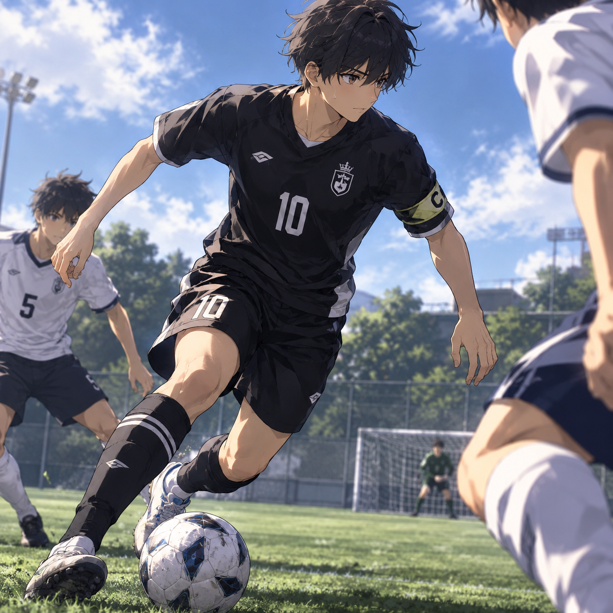

[Muhammad Arslan Alimuddin]
[Profesi Anda, Pelajar SMP]
Tentang Saya
[Halo! Namaku Muhammad Arslan Alimuddin bisa panggil aku arslan. aku hobinya main ML, Aku biasanya pakai cici,freya,zilong,dyrroth,dan sora]
[Aku Sekarang Sekolah di SMP Bina Qurani Islamic Boarding School. Aku Sekarang Kelas 8]
Keahlian Utama
[Keahlian 1, Mengaji]
[Keahlian 2, Adzan]
[Keahlian 3, Desain Di Photoshop/Photopea]
[Keahlian 4, Menulis Cerita]
[Keahlian 5, Menggambar]